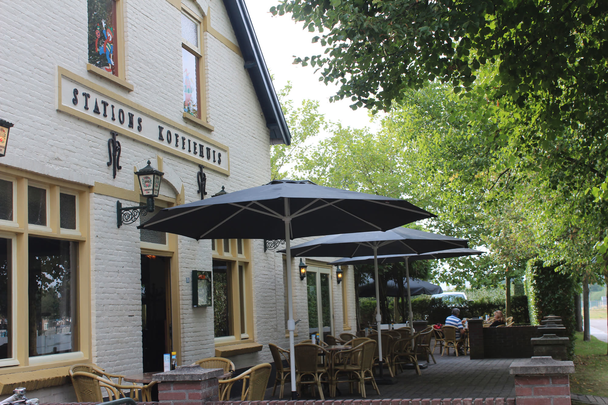
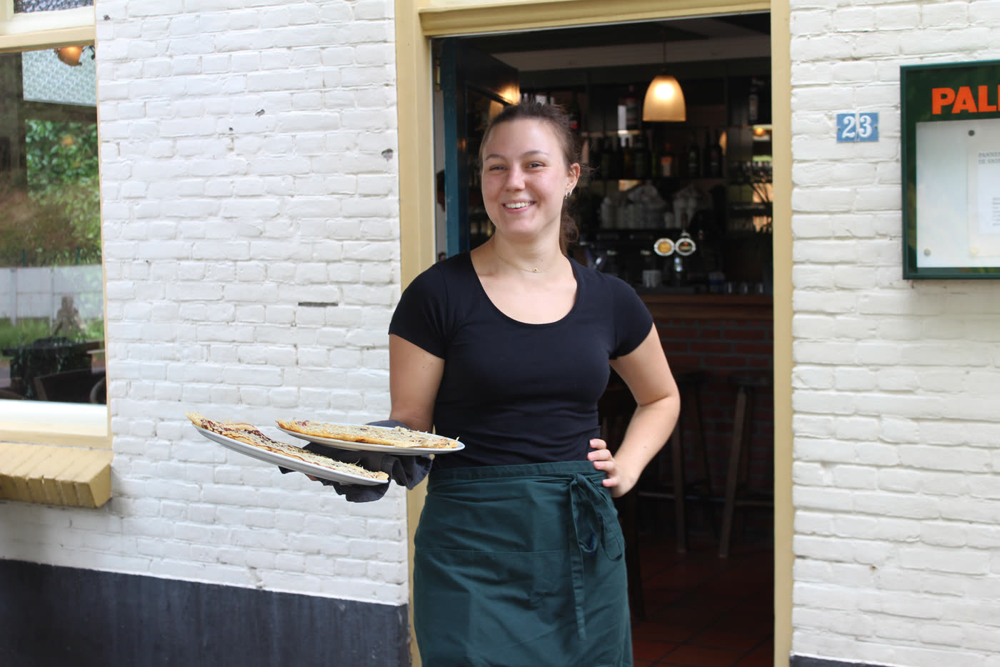
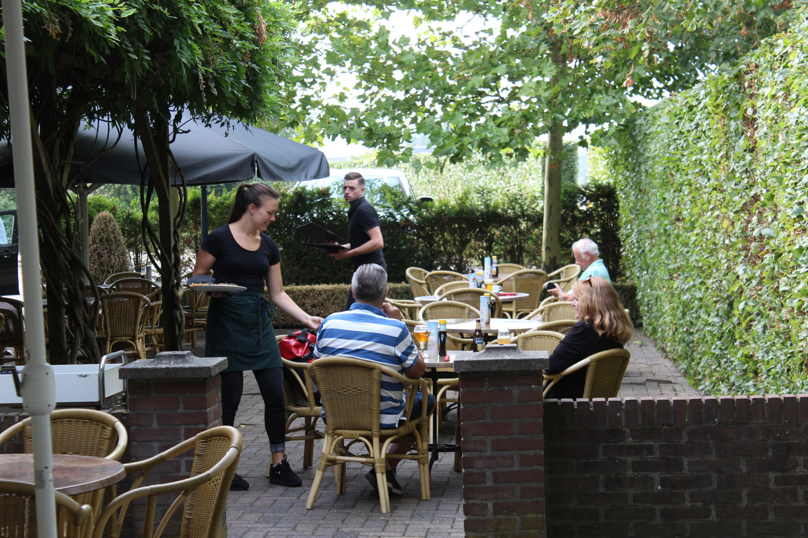
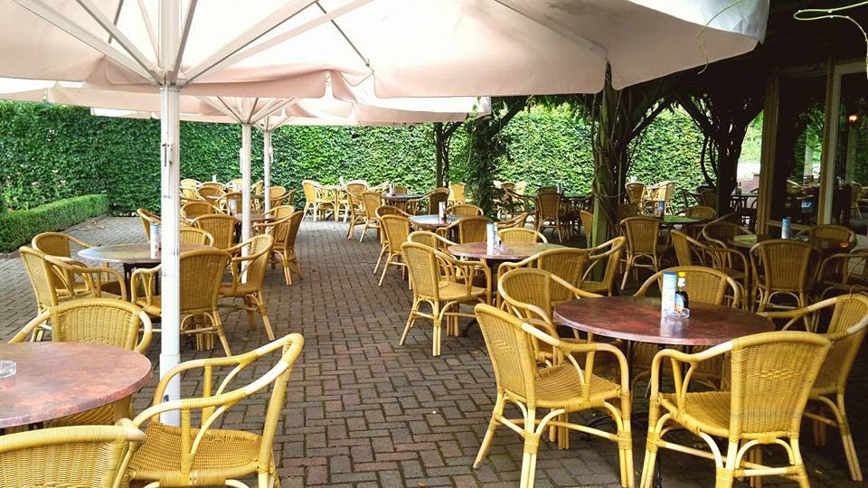
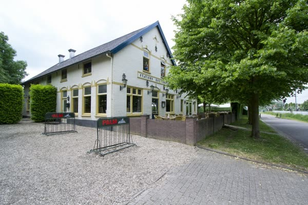

Pannenkoekhuis in Duiven
Pannenkoeken bij het oude station
Meer dan 80 soorten van de bakplaat, een terras voor 150 personen en plek voor de hele familie.
Welkom in het voormalig stations-koffiehuis
Pannenkoekhuis De Snippenhof zit in het voormalig stations-koffiehuis, vlak bij het treinstation van Duiven. Het pand voldoet aan alle eisen van tegenwoordig: er is een invalidentoilet en een ruime parkeerplaats.
Liever geen pannenkoek? Kies dan uit vers bereide vlees- en eiergerechten. Voor de kinderen is het feest met versierde kinderpannenkoeken, en bij minder grote trek bakken we de meeste pannenkoeken in een kleiner formaat.
- 200zitplaatsen binnen, met een apart gedeelte als u dat wilt
- 150plaatsen op het aangelegde terras
- 80+soorten pannenkoeken op de kaart

De menukaart
Zin in een ouderwetse pannenkoek met spek en stroop, of gaat u voor een internationale? Volgt u een dieet, geef het aan ons door: we houden rekening met onder meer glutenvrij, zoutarm en suikervrij.
Geen pannenkoek gevonden met die zoekterm. Probeer een ander ingrediënt, of vraag het gewoon aan de bediening: de keuken denkt graag mee.
De specials van dit moment (pannenkoek, schnitzel en ijscoupe) staan op het krijtbord in het restaurant. Prijzen in euro's.

Een terras voor 150 personen
Op het aangelegde terras is plaats voor 150 personen. Binnen telt het restaurant 200 zitplaatsen, en een apart gedeelte van het restaurant is ook mogelijk.

Met de hele club aan tafel
Zoekt u een gezellig restaurant om met een grote groep te eten? Voor grotere groepen kunt u ook buiten de openingstijden reserveren. De koks draaien hun hand niet om voor:
- Kinderverjaardagen
- Koffietafels
- Personeelsfeesten
- Brunches
- Warme en koude buffetten
- Broodmaaltijden
- Borrels
Bel ons om de mogelijkheden door te nemen.
Bel 0316-282818Openingstijden keuken
- Maandag t/m vrijdag
- 16.00 – 20.30 uur
- Zaterdag, zondag en feestdagen
- 12.00 – 20.30 uur
Een tafel reserveren
Reserveren gaat het snelst telefonisch. Bel ons en we zetten een tafel voor u klaar.
0316-282818Zo vindt u ons
Pannenkoekhuis De SnippenhofParallelweg 23
6922 HP Duiven
Het pannenkoekhuis ligt centraal in Duiven, op nog geen kilometer van de A12 (Utrecht – Oberhausen). Het station en andere OV-voorzieningen zijn in de directe omgeving, en er is een ruime parkeerplaats.
Route plannen
Blik op het verleden
Als we ons enigszins een beeld willen vormen van de toestand waarin het grondgebied van onze gemeente kort na de middeleeuwen verkeerde, moeten we heel veel wegdenken van wat er nu is. Van woonkernen is dan nog nauwelijks sprake. Al hebben opgravingen aan het licht gebracht dat er al vele eeuwen voordien bewoning moet zijn geweest, het aantal huizen is toch nog heel gering.
Lees verder
In het oog vallen de grote hoven, de woonsteden van de landadel en heerboeren. Als de meest bekende kunnen we noemen: de Berenklauw, Eltingerhof, Lengelerhof, Loowaard, Magerhorst, Ploen, Rijnegge en Rijswijk. De drie kerken sierden ook toen al het landschap, zij het niet in de vorm die ze thans hebben. De kerkgebouwen van Groessen en Duiven worden in een akte van 838 reeds genoemd; Loo had in ieder geval in 1300 een kapel.
Werken bij De Snippenhof
Momenteel hebben we geen vacatures. Voor informatie en open sollicitaties kunt u mailen naar desnippenhof@icloud.com.